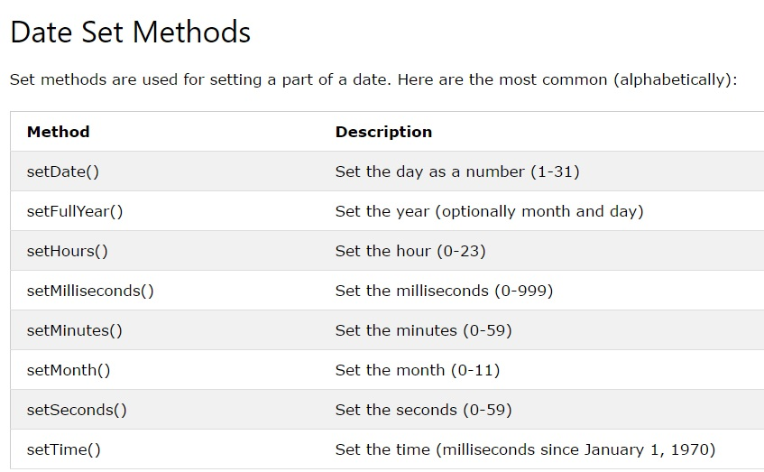

Use date methods to set date values (years, months, days, hours, minutes, seconds, milliseconds).

getTime( ) returns the number of milliseconds since January 1, 1970.
getFullYear( ) returns the year of a date as a four digit number:
Make an array of names and use getDay( ) to return the weekday as a name:
document.getElementById("demo").innerHTML = days[d.getDay()];
setFullYear( )sets a date object to a specific date.
setDate( ) sets the day of the month (1-31):